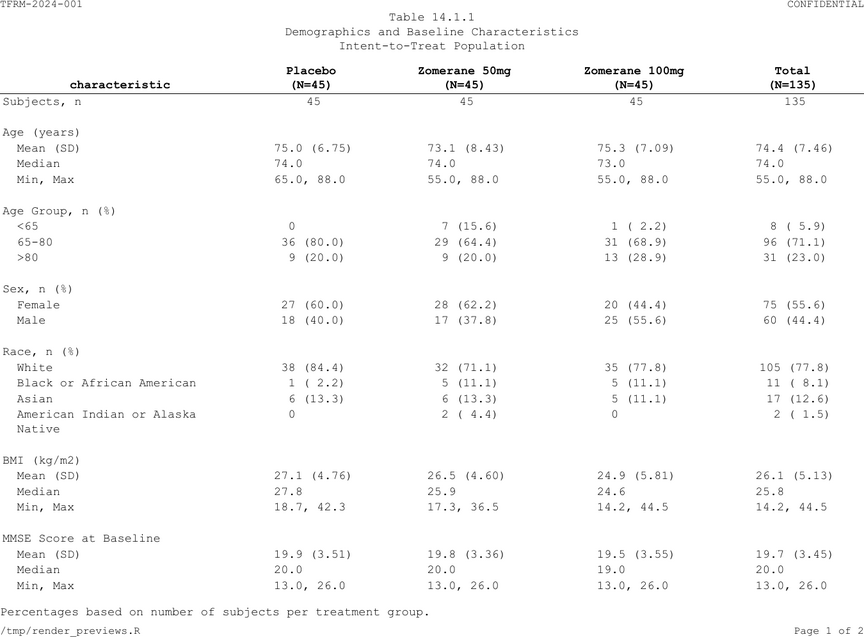

tlframe produces regulatory-grade clinical tables in RTF and PDF from a single pipeline. You describe what the table looks like; tlframe handles the rendering. No dplyr, no gt, no RMarkdown — just data in, document out.
Your first table
spec <- tbl_demog |>
fr_table() |>
fr_titles("Table 14.1.1", "Demographics and Baseline Characteristics") |>
fr_hlines("header")
spec
#>
#> ── fr_spec: Table
#> Data: 28 rows x 6 columns
#> Page: landscape letter, 9pt Courier New
#> Titles (2):
#> 1. [center] "Table 14.1.1"
#> 2. [center] "Demographics and Baseline Characteristics"
#> Header: valign=bottom
#> Rules: 1 hline(s)That’s a complete, renderable table. To produce a file:
Same spec, both formats. The file extension controls the output.
Production-ready table
Real pharma tables need column labels, N-counts, footnotes, and page
chrome. Start by setting shared formatting once with
fr_theme() — every table in the session inherits it:
# ── Set once per study program (or use _tlframe.yml) ──
fr_theme(
font_size = 9,
font_family = "Courier New",
orientation = "landscape",
hlines = "header",
header = list(bold = TRUE, align = "center"),
n_format = "{label}\n(N={n})",
footnote_separator = FALSE,
pagehead = list(left = "TFRM-2024-001", right = "CONFIDENTIAL"),
pagefoot = list(left = "{program}",
right = "Page {thepage} of {total_pages}")
)
n_itt <- c(placebo = 45, zom_50mg = 45, zom_100mg = 45, total = 135)Now each table only specifies what is unique to it:
spec <- tbl_demog |>
fr_table() |>
fr_titles(
"Table 14.1.1",
"Demographics and Baseline Characteristics",
"Intent-to-Treat Population"
) |>
fr_cols(
.width = "fit",
characteristic = fr_col("", width = 2.5),
placebo = fr_col("Placebo", align = "decimal"),
zom_50mg = fr_col("Zomerane 50mg", align = "decimal"),
zom_100mg = fr_col("Zomerane 100mg", align = "decimal"),
total = fr_col("Total", align = "decimal"),
group = fr_col(visible = FALSE),
.n = n_itt
) |>
fr_rows(group_by = "group", blank_after = "group") |>
fr_footnotes("Percentages based on number of subjects per treatment group.")
fr_validate(spec)
Demographics table rendered to PDF
Notice what is not in the table program: header styling, hlines, page headers/footers, N-format, footnote separator — the theme handles all of it. This is how production study programs work. See Automation & Batch for the full pattern.
Table anatomy
Every pharma table has the same structural regions. Here’s how they map to tlframe verbs:
+------------------------------------------------------------------------+
| Protocol TFRM-2024-001 CONFIDENTIAL |<- fr_pagehead()
+------------------------------------------------------------------------+
| |
| Table 14.1.1 |<- fr_titles()
| Demographics and Baseline Characteristics |
| |
| ---------------------------------------------------------------------- |
| Placebo Zomerane 50mg Zomerane 100mg Total |<- fr_cols() +
| (N=45) (N=45) (N=45) (N=135) | fr_cols(.n=)
| ====================================================================== |<- fr_hlines()
| Age (years) |
| Mean (SD) 68.2 (7.1) 67.8 (6.9) 68.0 (7.3) 68.0 (7.1) |<- data rows
| |
| Sex, n (%) |<- fr_rows(blank_after=)
| Male 26 (57.8) 24 (53.3) 25 (55.6) 75 (55.6) |
| ---------------------------------------------------------------------- |
| Percentages based on number of subjects per treatment group. |<- fr_footnotes()
+------------------------------------------------------------------------+
| t_demog.R Page 1 of 1 |<- fr_pagefoot()
+------------------------------------------------------------------------+10 verbs, 10 regions. Learn the verbs, build any table.
The pipeline
Every verb takes a spec, returns a spec. Verb order doesn’t matter — tlframe resolves everything (widths, N-count labels, page breaks) at render time.
What’s next
| I want to… | Read |
|---|---|
| Configure columns, widths, decimal alignment | Columns & Headers |
| Add N-counts to column headers | Columns & Headers |
| Write titles, footnotes, superscripts | Titles & Footnotes |
| Group rows, paginate, indent, group_label | Rows & Page Layout |
| Add borders, spanning headers, cell colors | Rules, Spans & Styles |
| Copy a complete table recipe | Table Cookbook |
| Create listings or embed figures | Listings & Figures |
| Set up study-wide defaults, batch render | Automation & Batch |
| Understand the internals | Architecture |